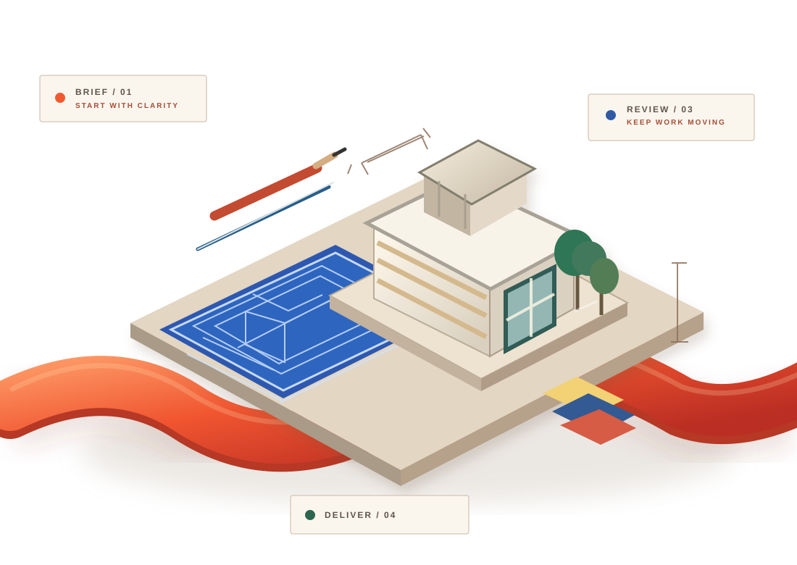

01 / PROJECT ENQUIRIES
Great work.
Not always discovered.
Prospective clients need a clear reason to enquire and an easy first step.
INDUSTRY 04 / DESIGN PRACTICES
A great studio needs more than creative vision. Connect the first project enquiry, the right client brief, proposal conversations and the people making each project happen.

ORIGINAL CONCEPTUAL ARTWORK / NOT A COMPLETED PROJECT
01 / BETWEEN IDEA AND DELIVERY
Client enquiries, briefs, revisions, approvals and handovers can create invisible business friction around otherwise thoughtful design work.
Prospective clients need a clear reason to enquire and an easy first step.
Early project goals, responsibilities and proposal decisions need clarity.
Teams and clients benefit when revisions and next actions are visible.
02 / THE CONNECTED STUDIO
Select a stage to see an example business workflow around an architecture project. Actual services and commitments depend on an agreed scope.
INTEREST / FIRST CONTACT
Help potential clients find a relevant practice, understand its approach and start the right conversation.
03 / TAAMERAT360 FOR ARCHITECTURE PRACTICES
Our focus is the business around architecture—not design authorship, drawings, building permits, professional certification or statutory approvals.
Make the practice easier to discover and its offer clearer to potential clients.
Explore packageKeep early conversations, quotations and agreed next steps visible.
Explore packageGive studio teams a clearer way to organise business communication.
Explore packageConnect the client relationship from first enquiry through follow-through.
Explore package04 / REAL WORK, NOT INVENTED WORK
Approved practice stories, project imagery, verified outcomes and client testimonials will be shown here when permission and evidence are provided. Until then, the placeholders stay visible.
Explore your own opportunity[Client-approved business challenge, approach and verified outcomes]
05 / YOUR NEXT PROJECT CONVERSATION
Choose the type of practice and your current challenge. A private browser-only tool will draft a simple discussion brief you can copy.
Answer the three questions and create a starting business discussion brief.
Your selections stay in your browser unless you choose to share them.
06 / THE IMPORTANT DISTINCTIONS
This landing page describes business growth, communication and operations support. Architectural drawings, professional design work and regulatory submissions are not included unless separately agreed with an appropriately qualified provider.
That's the goal of an initial discovery conversation. Any integrations, deliverables, timeline or technical changes require confirmation before they become part of the agreed scope.
No. The brief builder captures a useful starting point, while project information and commercial terms can be confirmed during scoping. It does not create an agreement.
ARCHITECTURE / THE NEXT CONVERSATION
Let's find the business challenge worth solving first and agree on a practical next step for your studio.
Start a conversation